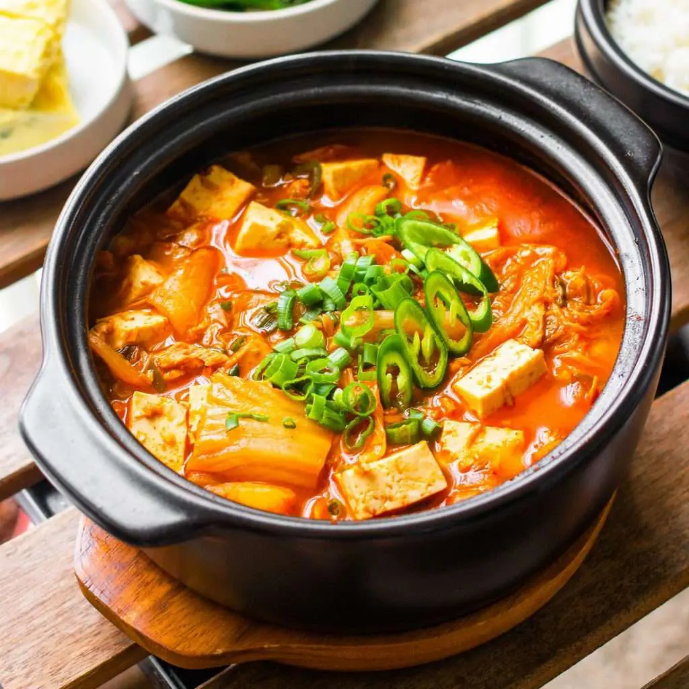

Ingredients
- 1 cup kimchi
- 0.5 kg pork belly, diced
- 1 small onion, diced
- 3 cloves of garlic, minced
- 300g pack of tofu
- 1/2 bunch of enoki mushrooms
- 1 cup of anchovy or chicken stock (or just use water and some dashi powder)
- 1 tbsp fish sauce
- 1 tbsp gochujang
- 1 tbsp ssamjang
- 1 green onion
Procedure
- Add the pork belly to the cold pot and sear all sides on high heat, then remove.
- Add garlic and onion, stir fry until fragrant.
- Add kimchi and stir fry for a few minutes.
- Add stock and bring to a boil.
- Stir in fish sauce, gochujang, and ssamjang.
- Taste stew for seasoning, optionally add fish sauce, soy sauce, sugar, or salt to your liking.
- Add in mushrooms and tofu before bringing to a boil and simmering for a few minutes.
- Garnish with some green onion and serve with rice.